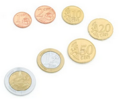

I. Programmation dynamique¶
Cours¶
Introduction¶
Nous avons vu cette année que des problèmes pouvaient être résolus efficacement en les divisant en plus petits problèmes, dont on combine les solutions pour obtenir une solution à notre problème initial : c’est l’approche "Diviser pour régner". Cette méthode algorithmique est puissante mais pas toujours optimisée en temps. Nous allons nous intéresser à une manière qui permet d’obtenir des algorithmes plus rapides à s’exécuter : la programmation dynamique.
Exemple
L’exemple choisi pour ce cours est celui, classique, du calcul des nombres de la suite de Fibonacci. Cette suite \((u_n)\) est définie pour tout entier \(n\) par :
On souhaite programmer la fonction F, qui, pour tout entier n, renvoie le terme d'indice n de la suite.
A. L’approche récursive¶
La définition mathématique de la suite, avec la récurrence, guide vers une solution récursive. Écrire cette solution et l’arbre binaire représentant les appels récursifs effectués pour le calcul de F(5) :
| Code Python | Arbre représentant les appels pour F(5) |
|---|---|
Code
def F(n):
if n < = 1:
return n
else :
return F(n-1) + F(n-2)
Quels appels sont faits plusieurs fois, pour la même valeur de n ?
Les calculs de F(2) et F(3) sont effectués plusieurs fois.
Dans quel ordre les appels récursifs sont-ils faits ?
L’arbre est parcouru dans l’ordre d’un parcours en profondeur : d’abord les sous-arbres gauches, puis les sous-arbres droits.
B. Amélioration de l’approche récursive¶
Pour éviter de faire plusieurs fois les mêmes calculs, nous allons stocker les termes de la suite déjà calculés dans une variable m (pour « mémoire »), de type liste Python.
En se basant sur l’arbre des appels pour F(5), représenter cette liste m au fur et à mesure qu’elle se remplit :
| m[0] | m[1] | m[2] | m[3] | m[4] | m[5] |
|---|---|---|---|---|---|
Solution
| m[0] | m[1] | m[2] | m[3] | m[4] | m[5] |
|---|---|---|---|---|---|
None |
None |
None |
None |
None |
None |
None |
1 | None |
None |
None |
None |
| 0 | 1 | None |
None |
None |
None |
| 0 | 1 | 1 | None |
None |
None |
| 0 | 1 | 1 | 2 | None |
None |
| 0 | 1 | 1 | 2 | 3 | None |
| 0 | 1 | 1 | 2 | 3 | 5 |
Il faut donc modifier notre algorithme pour que, si F(n) est déjà calculé pour une valeur n, alors on récupère sa valeur dans m. Sinon, on calcule cette nouvelle valeur et on la stocke dans m[n].
| Version récursive améliorée | Fonction d’initialisation de m |
|---|---|
Code fonction récursive
def fibonacci(n, m):
if n < = 1:
m[n] = n
return n
elif m[n] != None :
return m[n]
else :
m[n] = fibonacci(n-1, m) + fibonacci(n-2, m)
return m[n]
Code fonction d'initialisation
def F(n) :
m = [None for i in range(n+1)]
return fibonacci(n, m)
C’est le principe de la programmation dynamique : mémoriser les résultats des calculs au fur et à mesure, pour ne pas avoir à les recalculer après.
C. L’approche itérative¶
On utilise souvent cette méthode algorithmique pour améliorer les performances en temps des programmes récursifs, mais son principe s’applique aussi sur des programmes itératifs. A partir de l’observation du tableau rempli dans la partie 2, proposer une version itérative de cette fonction. Elle utilisera le principe de la programmation dynamique.
Code
def F(n) :
fibonacci = [None for i in range(0, n+1)]
fibonacci[0] = 0
fibonacci[1] = 1
for i in range(2, n+1) :
fibonacci[i] = fibonacci[i-1] + fibonacci[i-2]
return fibonacci[n]
D. Mise en pratique¶
Implémenter sur ordinateur ces différentes versions de F, que l’on pourra appeler respectivement F_rec, F_rec_dyn, F_it_dyn. Les tester pour les différentes valeurs de n données dans le tableau suivant, et indiquer un ordre de grandeur du temps de calcul nécessaire pour obtenir le résultat parmi : immédiat – secondes – minutes – indéterminé
| n | 5 | 20 | 30 | 50 | 100 | 1000 | 10 000 |
|---|---|---|---|---|---|---|---|
Solution
| n | 5 | 20 | 30 | 50 | 100 | 1000 | 10 000 |
|---|---|---|---|---|---|---|---|
| F_rec | immédiat | immédiat | seconde | minute | indéterminé | indéterminé | indéterminé |
| F_rec_dyn | immédiat | immédiat | immédiat | immédiat | immédiat | immédiat | Stack overflow ! |
| F_it_dyn | immédiat | immédiat | immédiat | immédiat | immédiat | immédiat | immédiat |
E. Synthèse¶
Résumer en quelques phrases en quoi consiste la programmation dynamique et en quoi est-ce qu'elle est utile.
A retenir
La programmation dynamique est une amélioration de la méthode algorithmique « Diviser pour régner ». Elle reprend son principe, mais ajoute le stockage des résultats intermédiaires (des sous-problèmes) pour éviter de les recalculer. Elle est très utile lorsque beaucoup des sous-problèmes sont identiques.
TD : Le problème du rendu de monnaie¶
Introduction¶

Étant donné un système de monnaie comportant des pièces de valeurs différentes, on veut écrire un programme retournant le nombre minimal de pièces à utiliser pour rendre la monnaie sur une somme due.
On suppose qu’il est possible de rendre la somme due avec le système de monnaie que l’on utilise.
A. L’approche gloutonne¶
Il a été vu en classe de 1ère qu’il était possible de résoudre ce problème avec un algorithme glouton.
Quel est son principe ?
Son principe est de choisir la pièce de valeur maximale, inférieure à la somme à rendre. On actualise la somme à rendre à chaque fois que l’on sélectionne une nouvelle pièce, et on réitère l’algorithme.
Exemples
Quelles pièces vont être rendues avec le système de monnaie euro = [50, 20, 10, 5, 2, 1] pour payer la somme 48 ?
20 + 20 + 5 + 2 + 1, donc 5 pièces
Quelles pièces vont être rendues avec le système de monnaie imperial = [30, 24, 12, 6, 3, 1] pour payer la somme 48 ? Est-ce une solution optimale ?
30 + 12 + 6 (3 pièces). Ce n’est pas la solution optimale : on aurait pu rendre 24 + 24 (2 pièces).
En voici un code possible en Python (il suppose que les pièces du système de monnaie sont rangées dans par valeurs décroissantes). rendu_glouton prend en paramètres la somme à rendre somme et les pièces dont on dispose pour le faire stockées dans la liste Python pieces.
Code
def rendu_glouton(somme, pieces):
1 nb_pieces = 0
2 i = 0
3 while somme > 0 and i < len(pieces):
4 if pieces[i] > somme:
5 i = i + 1
6 else:
7 somme = somme - pieces[i]
8 nb_pieces = nb_pieces + 1
return nb_pieces
Vérifier que l’on obtient le résultat attendu pour le 2eme exemple donné (quand on fait l'appel rendu_glouton(48, imperial)), en remplissant le tableau avec la valeur des variables demandées à chaque nouvelle itération de la boucle while (à chaque fois que l’on revient à la ligne 3) :
| somme | nb_pieces | i | piece[i] | |
|---|---|---|---|---|
| init | 48 | 0 | 0 | 30 |
Solution
| somme | nb_pieces | i | piece[i] | |
|---|---|---|---|---|
| init | 48 | 0 | 0 | 30 |
| 1 | 18 | 1 | 0 | 30 |
| 2 | 18 | 1 | 1 | 24 |
| 3 | 18 | 1 | 2 | 12 |
| 4 | 6 | 2 | 2 | 12 |
| 5 | 6 | 2 | 3 | 6 |
| 6 | 0 | 3 | 3 | 6 |
L’algorithme glouton ne renvoie donc pas toujours la solution optimale !
B. Solution optimale avec une approche récursive¶
Voici un algorithme explorant toutes les solutions et sélectionnant celle optimale, en utilisant la récursivité.
Code
def rendu_recursif(somme, pieces):
if somme == 0:
return 0
else:
mini = somme + 1
for p in pieces:
if p <= somme:
nb = 1 + rendu_recursif(somme-p, pieces)
if nb < mini:
mini = nb
return mini
Principe
Cet algorithme est basé sur l’idée que si on rend la valeur \(somme\) avec \(nb(somme)\) pièces et la valeur \(somme – piece\) avec \(nb(somme-piece)\), alors :
\(nb(somme) = nb(somme - piece) + 1\)
On calcule alors comment rendre somme – piece, en testant toutes les pièces dont la valeur est inférieure à somme et en retenant la valeur de nb minimale. On réitère l’algorithme jusqu’à obtenir une somme de 0.
-
Tracer l’arbre représentant les appels récursifs fait pour l’appel
rendu_recursif(6, [50, 20, 10, 5, 2, 1]). Ses nœuds contiennent la valeur de la somme restante à rendre, et on associe à chaque branche la pièce choisie correspondante. -
Identifier les appels effectués plusieurs fois.
-
Entourer où est-ce que l’on trouve la solution optimale.
C. Amélioration avec la programmation dynamique¶
Pour éviter de re-calculer les mêmes choses plusieurs fois, nous allons améliorer l’algorithme en utilisant la programmation dynamique. On utilise une variable m de type liste Python stockant, pour chaque somme à rendre possible (l’indice de l’élément étant la valeur de cette somme), le nombre de pièces minimales que l’on peut utiliser.
L’algorithme est modifié de la même manière que pour le calcul des termes de la suite de Fibonacci : si rendu_memo(somme, pieces, m) est déjà calculé pour une valeur de somme, alors on récupère sa valeur dans m. Sinon, on calcule cette nouvelle valeur et on la stocke dans m[somme]. Il faut également définir une fonction qui initialise m.
Version récursive améliorée
def rendu_memo(somme, pieces, m):
if somme == 0:
m[0] = 0
return 0
elif m[somme] != None:
return m[somme]
else:
mini = somme + 1
for p in pieces:
if p <= somme:
nb = 1 + rendu_memo(somme-p, pieces, m)
if nb < mini:
mini = nb
m[somme] = nb
return mini
Fonction d’initialisation de m
def rendu_dyn(somme, pieces):
m = [None for i in range(0,somme+1)]
return rendu_memo(somme, pieces, m)
Représenter comment m va se remplir pour l’appel de rendu_dyn(6, [50, 20, 10, 5, 2, 1]), en déroulant votre programme avec l’outil PythonTutor :
| m[0] | m[1] | m[2] | m[3] | m[4] | m[5] | m[6] |
|---|---|---|---|---|---|---|
None |
None |
None |
None |
None |
None |
None |
Solution
| m[0] | m[1] | m[2] | m[3] | m[4] | m[5] | m[6] |
|---|---|---|---|---|---|---|
None |
None |
None |
None |
None |
None |
None |
| 0 | None |
None |
None |
None |
None |
None |
| 0 | 1 | None |
None |
None |
None |
None |
| 0 | 1 | None |
None |
None |
None |
2 |
| 0 | 1 | 1 | None |
None |
None |
2 |
| 0 | 1 | 1 | None |
2 | None |
2 |
| 0 | 1 | 1 | 2 | 2 | None |
2 |
| 0 | 1 | 1 | 2 | 2 | 1 | 2 |
D. Tests¶
a. Vérifier que rendu_dyn(48, imperial) donne la solution optimale.
b. Tester rendu_recursif et rendu_dyn pour différentes valeurs de somme, et indiquer l’ordre de grandeur du temps d’exécution des appels parmi : immédiat – secondes – minutes – indéterminé
| somme | 5 | 10 | 25 | 35 | 50 | 100 | 1 000 | 100 000 |
|---|---|---|---|---|---|---|---|---|
rendu_recursif |
||||||||
rendu_dyn |
Solution
| somme | 5 | 10 | 25 | 35 | 50 | 100 | 1 000 | 100 000 |
|---|---|---|---|---|---|---|---|---|
rendu_recursif |
immédiat | immédiat | immédiat | min | indéter | indéter | indéter | indéter |
rendu_dyn |
immédiat | immédiat | immédiat | immédiat | immédiat | immédiat | immédiat | immédiat |